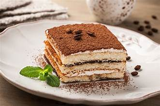
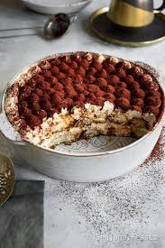
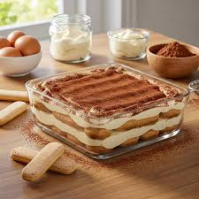

Tiramisu là món tráng miệng cổ điển của Ý, nổi tiếng với hương vị cà phê
đậm đà, vị béo ngậy của phô mai mascarpone, vị ngọt dịu của kem và bánh
ladyfinger mềm thấm đẫm. Tên gọi "Tiramisu" có nghĩa là "hãy nâng tôi
lên" hay "hãy làm tôi vui lên", thể hiện khả năng đánh thức mọi giác
quan của món bánh này. Tiramisu không chỉ là một món ăn mà còn là một
trải nghiệm ẩm thực tinh tế, hoàn hảo cho những buổi tiệc hay những
khoảnh khắc thư giãn.



Nguyên liệu
Phô mai Mascarpone: 250g (phô mai tươi của Ý, có độ
béo cao và mềm mịn, là linh hồn của Tiramisu).
Trứng gà: 3 quả lớn (tách riêng lòng đỏ và lòng
trắng).
Đường: 100g (đường cát trắng, điều chỉnh tùy theo
khẩu vị ngọt).
Kem tươi (Whipping Cream): 200ml (loại có hàm lượng
béo từ 35% trở lên để kem bông tốt).
Bánh Ladyfinger (Savoiardi): 1 gói (khoảng 200-250g,
bánh quy xốp hình ngón tay, có khả năng thấm hút tốt).
Cà phê đen pha sẵn: 200ml (cà phê espresso hoặc cà
phê pha phin đậm đặc, để nguội).
Rượu: 2-3 muỗng canh rượu Rum, Amaretto, Marsala hoặc
Kahlua (tùy chọn, để tăng hương vị và độ thơm cho bánh).
Bột cacao nguyên chất: Một lượng vừa đủ để rắc lên
mặt bánh.
Cách làm
Bước 1: Chuẩn bị hỗn hợp kem lòng đỏ trứng
Trong một tô chịu nhiệt, cho 3 lòng đỏ trứng gà và 100g đường vào.
Đặt tô lên nồi nước đang sôi nhẹ (cách thủy), dùng phới lồng đánh
đều hỗn hợp trứng và đường cho đến khi đường tan hoàn toàn, hỗn
hợp chuyển sang màu vàng nhạt, bông nhẹ và đặc hơn (khoảng 5-7
phút). Việc này giúp diệt khuẩn trứng và làm kem mịn hơn.
Nhấc tô ra khỏi bếp, để nguội hoàn toàn.
Bước 2: Trộn phô mai Mascarpone
Khi hỗn hợp lòng đỏ trứng đã nguội, cho 250g phô mai mascarpone
vào tô.
Dùng phới lồng hoặc máy đánh trứng đánh đều hỗn hợp cho đến khi
mịn màng và hòa quyện. Tránh đánh quá lâu sẽ làm mascarpone bị
tách nước.
Bước 3: Đánh kem tươi và lòng trắng trứng
Trong một tô sạch khác, cho 200ml kem tươi (whipping cream) lạnh
vào. Dùng máy đánh trứng đánh kem ở tốc độ cao đến khi kem bông
mềm, tạo chóp nhưng vẫn còn độ lỏng nhẹ.
Trong một tô sạch khác nữa, cho 3 lòng trắng trứng gà vào. Dùng
máy đánh trứng đánh lòng trắng trứng ở tốc độ cao đến khi bông
cứng, tạo chóp đứng.
Bước 4: Hòa quyện các hỗn hợp kem
Cho kem tươi đã đánh bông vào hỗn hợp mascarpone và lòng đỏ trứng.
Dùng phới dẹt (spatula) trộn nhẹ nhàng theo kiểu fold (hất từ dưới
lên) để giữ độ bông xốp của kem.
Tiếp theo, cho lòng trắng trứng đã đánh bông cứng vào hỗn hợp.
Tiếp tục trộn nhẹ nhàng theo kiểu fold cho đến khi tất cả hòa
quyện thành một khối kem đồng nhất, mịn màng và bông xốp.
Bước 5: Nhúng bánh và xếp lớp Tiramisu
Trong một bát rộng, đổ 200ml cà phê đen đã nguội. Nếu dùng rượu,
thêm 2-3 muỗng canh rượu Rum/Amaretto vào cà phê, khuấy đều.
Nhúng nhanh từng chiếc bánh ladyfinger vào hỗn hợp cà phê (chỉ
nhúng khoảng 1-2 giây mỗi mặt, không nhúng quá lâu vì bánh sẽ bị
nát).
Xếp một lớp bánh ladyfinger đã nhúng cà phê vào đáy khuôn (khuôn
vuông, chữ nhật hoặc ly thủy tinh).
Đổ một lớp kem mascarpone lên trên lớp bánh, dàn đều.
Lặp lại các lớp bánh và kem cho đến khi hết nguyên liệu, kết thúc
bằng một lớp kem mascarpone trên cùng.
Bước 6: Làm lạnh và trang trí
Dùng màng bọc thực phẩm bọc kín khuôn Tiramisu.
Để bánh trong tủ lạnh ít nhất 4-6 giờ để bánh đông lại, các hương
vị hòa quyện vào nhau. Tốt nhất là để qua đêm.
Trước khi dùng, rắc một lớp bột cacao nguyên chất lên khắp bề mặt
bánh.
Cắt bánh thành miếng vừa ăn và thưởng thức.
Mẹo nhỏ để Tiramisu ngon hơn:
Chất lượng nguyên liệu: Sử dụng phô mai mascarpone
và kem tươi chất lượng cao sẽ quyết định rất lớn đến độ béo ngậy và
mịn màng của Tiramisu.
Cà phê: Nên dùng cà phê espresso đậm đặc để có
hương vị cà phê rõ nét. Đảm bảo cà phê đã nguội hoàn toàn trước khi
nhúng bánh.
Rượu: Rượu là thành phần tùy chọn nhưng sẽ giúp
tăng thêm hương vị đặc trưng và độ thơm cho Tiramisu.
Đánh trứng cách thủy: Bước đánh lòng đỏ trứng với
đường cách thủy là quan trọng để diệt khuẩn và làm hỗn hợp kem mịn
màng hơn.
Đánh kem và lòng trắng: Đảm bảo kem tươi và lòng
trắng trứng được đánh bông đúng độ để kem Tiramisu xốp và nhẹ.
Nhúng bánh: Nhúng bánh ladyfinger thật nhanh vào cà
phê. Nếu nhúng quá lâu, bánh sẽ bị nát và làm bánh bị ướt.
Thời gian làm lạnh: Tiramisu cần ít nhất 4-6 giờ để
đông và các hương vị hòa quyện. Để qua đêm là lý tưởng nhất để bánh
đạt độ ngon hoàn hảo.
Bột cacao: Chỉ rắc bột cacao ngay trước khi dùng để
bột không bị ẩm và giữ được màu sắc đẹp.
Bình luận và Đánh giá
Đánh giá của bạn
Chưa có bình luận nào.